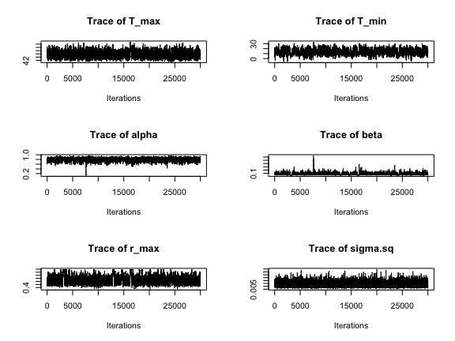
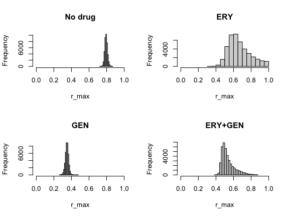
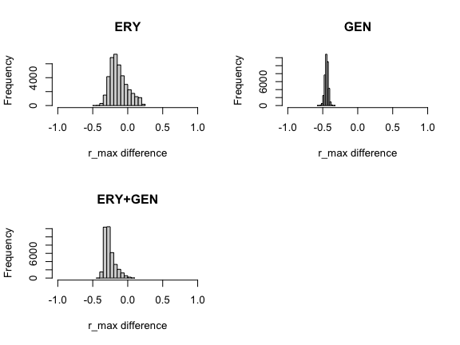
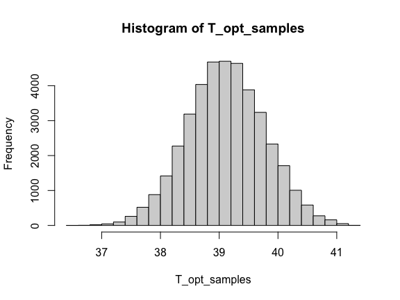
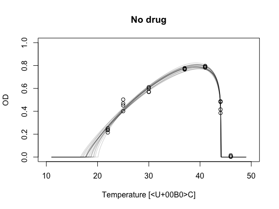
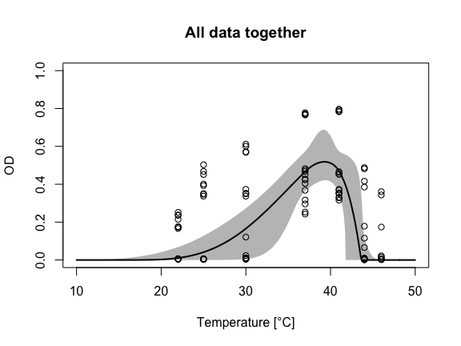

# Uncomment lines below and run to install packages if missing.
#install.packages("tidyverse")
# install.packages("scales")Advanced topics with bayesTPC
In this practical, we will see how to add a custom functional form for thermal performance curves that is not currently implemented in bayesTPC. We will also see how to process the output from bayesTPC to generate custom plots or get the posterior distribution of model parameters.
We’ll start by loading some packages we will need for this section (please make sure you install any that are missing, especially the scales and tidyverse packages, which we’ll need for some custom plots below).
set.seed(1234)
library(tidyverse)
library(nimble)
library(HDInterval)
library(MCMCvis)
library(coda) # makes diagnostic plots
library(IDPmisc) # makes nice colored pairs plots to look at joint posteriors
library(matrixStats)
library(truncnorm)
library(bayesTPC)
library(scales)Thermal performance curves under antibiotics
Let’s take a look at a dataset of the temperature-dependence of the growth of the bacterium Escherichia coli in the presence of various antibiotic backgrounds (data originally from this study).
abdata <- read.csv("data/ab_data.csv")
head(abdata) drug1name drug2name drug1num drug2num T t sample OD
1 ERY GEN 4 6 37 24 1 0.368300008
2 ERY GEN 4 6 37 24 2 0.404299991
3 ERY GEN 4 6 37 24 3 0.423800008
4 ERY GEN 4 6 37 24 4 0.427200006
5 ERY GEN 4 6 22 24 1 0.004800001
6 ERY GEN 4 6 22 24 2 0.005099999This dataset consists of optical density (OD) values (which are proportional to the number of bacteria) of E. coli cultures after 24 hour growth at various temperatures (T) under fixed concentrations of 12 antibiotics and all their pairwise combinations. There are four replicates per drug/temperature treatment.
In this workshop we will focus on comparing how the thermal performance for E. coli growth looks like under four conditions of interest:
- no antibiotic
- gentamicin (GEN)
- erythromycin (ERY)
- GEN+ERY (both antibiotics present at the same time)
# The data uses "WT" to encode "no drug".
nodrug <- subset(abdata, (abdata["drug1name"] == "WT") & (abdata["drug2name"] == "WT"))
GEN <- subset(abdata, (abdata["drug1name"] == "GEN") & (abdata["drug2name"] == "WT"))
ERY <- subset(abdata, (abdata["drug1name"] == "ERY") & (abdata["drug2name"] == "WT"))
both <- subset(abdata, (abdata["drug1name"] == "ERY") & (abdata["drug2name"] == "GEN"))Let’s start by plotting the data.
par(mfrow=c(2,2))
plot(nodrug$T, nodrug$OD, xlab="Temperature [°C]", ylab="OD", main="No drug", ylim=c(0, 1))
plot(GEN$T, GEN$OD, xlab="Temperature [°C]", ylab="OD", main="GEN", ylim=c(0, 1))
plot(ERY$T, ERY$OD, xlab="Temperature [°C]", ylab="OD", main="ERY", ylim=c(0, 1))
plot(both$T, both$OD, xlab="Temperature [°C]", ylab="OD", main="GEN+ERY", ylim=c(0, 1))
As might be expected, adding antibiotics to the growth media decreases the number of bacteria. However, they can decrease growth more at some temperatures than others, leading to changes in the shape of the TPC.
Some of the shapes you get when adding antibiotics do not look like typical TPCs and it could be difficult to fit this data with many common TPC models. In the following section, we show how we can add a new functional form to bayesTPC that can describe these TPCs.
A flexible and interpretable model for thermal performance curves
In this section, we introduce a new functional form for thermal performance curves called flexTPC. This model aims to be both flexible (aiming to describe unimodal curves of any skewness) and interpretable (with all model parameters having a clear biological interpretation).
A preprint introducing this model and showing its performance in various different datasets will be available soon. In the meantime, here’s a link to the associated GitHub (which will link to the preprint once it’s ready).
The equation for the flexTPC model is
\[ r(T) = r_{\max}\left[\left(\frac{T - T_{\min}}{\alpha} \right)^{\alpha} \left(\frac{T_{\max} - T}{1 - \alpha} \right)^{1-\alpha} \left(\frac{1}{T_{\max} - T_{\min}} \right) \right]^\frac{\alpha (1 - \alpha)}{\beta^2} \]
where
- \(T_{\min}\) is the minimum temperature,
- \(T_{\max}\) the maximum temperature,
- \(r_{\max}\) the maximum trait value/performance of the TPC,
- \(\alpha \in [0,1]\) determines where the optimal temperature \(T_{\mathrm{opt}}\) is relative to \(T_{\min}\) and \(T_{\max}\) through the equation \[ T_{\mathrm{opt}} = \alpha T_{\max} + (1 - \alpha) T_{\min} \] (where, for example, \(\alpha = 0\) corresponds to \(T_{\mathrm{opt}} = T_{\min}\), \(\alpha = 1\) corresponds to \(T_{\mathrm{opt}} = T_{\max}\) and \(\alpha = 1/2\) corresponds to a symmetric TPC where \(T_{\mathrm{opt}} = (T_{\min} + T_{\max}) / 2\)), and
- \(\beta > 0\) determines the breadth of the TPC near its peak.
It may be more intuitive to look at how the predicted TPC changes as we modify each of these parameters. You can change each parameter in flexTPC in the visualization below to see how it affects the shape of the curve. As you can see, flexTPC can describe curves of a wide variety of shapes, as long as they are unimodal (that is, have a single peak).
Adding the flexTPC function to bayesTPC
We want to add the flexTPC functional form to bayesTPC in order to fit this data. To do this, we need to do the following:
We need to write down the flexTPC equation in a format that is understood by bayesTPC.
We need to set default prior distributions for all parameters in the model. As we will be focusing on the antibiotic dataset presented earlier, we will define the priors we want to use in this case here directly rather than defining default non-restrictive priors.
Writing down an expression for the flexTPC functional form
Every functional form in bayesTPC needs to be written down as an expression in R. Let’s start by writing down an expression for the flexTPC equation. In order to avoid some numerical issues, we’ll actually write it in a slightly different way than shown in the equation above. It is not important to understand how these two forms are related, but here’s an explanation if you’re curious (you can safely skip this).
## Note: This looks a little different from the equation as written above, but is
## equivalent to it. It's just written a little differently for numerical stability.
flexTPC_formula <- expression((T_max > Temp) * (T_min < Temp) * r_max * exp((alpha * (1 - alpha) / beta^2) * (alpha * log( max((Temp - T_min) / alpha, 10^-20))
+ (1 - alpha) * log(max ((T_max - Temp) / (1 - alpha), 10^-20))
- log(T_max - T_min)) ) )Defining prior distributions
We also need to define prior distributions for every parameter in the model. Rather than define default nonrestrictive priors for all parameters, we will define the prior distributions we want to use for the antibiotic data directly.
# Prior distributions.
flexTPC_priors <- c(
r_max = "dunif(0, 1)", # Maximum trait value. Chosen because OD values are less than one and because we want to give equal prior probability to all values in the [0, 1] interval.
T_max = "dnorm(46, 1 / 2^2)", ## Normal prior with mu=46, sigma=2. Assumes 95% prior CI of approximately [42°C, 50°C].
T_min = "dnorm(10, 1 / 5^2)", ## Normal prior with mu=10, sigma=5. Assumes 95% prior CI of approximately [0°C, 20°C]
alpha = "dunif(0, 1)", ## Uniform prior in alpha places equal prior probability on T_opt being anywhere in-between T_min and T_max.
beta = "dgamma(0.3^2 / 0.2^2, 0.3 / 0.2^2)") ## Gamma prior with mean of 0.3 and standard deviation of 0.2. Asssumes 95% prior CI of approx [0.01, 0.99] for beta. Typical TPCs like those that are described by the Briere and quadratic models have values around 0.2 to 0.4.Now that we have all the ingredients we need, we can define the flexTPC model in bayesTPC.
flexTPC_normal <- specify_normal_model("flexTPC_normal", #model name
parameters = flexTPC_priors, #names are parameters, values are priors
formula = flexTPC_formula
)Model type 'flexTPC_normal' can now be accessed using other bayesTPC functions. Use `reset_models()` to reset back to defaults.cat(configure_model(flexTPC_normal)){
for (i in 1:N){
m[i] <- ( (T_max > Temp[i]) * (T_min < Temp[i]) * r_max * exp((alpha * (1 - alpha)/beta^2) * (alpha * log(max((Temp[i] - T_min)/alpha, 10^-20)) + (1 - alpha) * log(max((T_max - Temp[i])/(1 - alpha), 10^-20)) - log(T_max - T_min))) )
Trait[i] ~ T(dnorm(mean = m[i], tau = 1/sigma.sq), 0, )
}
r_max ~ dunif(0, 1)
T_max ~ dnorm(46, 1 / 2^2)
T_min ~ dnorm(10, 1 / 5^2)
alpha ~ dunif(0, 1)
beta ~ dgamma(0.3^2 / 0.2^2, 0.3 / 0.2^2)
sigma.sq ~ dexp(1)
}For any model defined in bayesTPC, we can take a look at how the model expression and the default priors are defined. Let’s do this for flexTPC.
get_formula("flexTPC_normal")expression((T_max > Temp) * (T_min < Temp) * r_max * exp((alpha *
(1 - alpha)/beta^2) * (alpha * log(max((Temp - T_min)/alpha,
10^-20)) + (1 - alpha) * log(max((T_max - Temp)/(1 - alpha),
10^-20)) - log(T_max - T_min))))get_default_priors("flexTPC_normal") r_max T_max
"dunif(0, 1)" "dnorm(46, 1 / 2^2)"
T_min alpha
"dnorm(10, 1 / 5^2)" "dunif(0, 1)"
beta sigma.sq
"dgamma(0.3^2 / 0.2^2, 0.3 / 0.2^2)" "dexp(1)" Optional: Try looking at the formula and default priors for another model in bayesTPC such as the Briere model.
Fitting the flexTPC model to antibiotic data
Now let’s get the data in the right shape and fit the flexTPC model to the data of our conditions of interest.
nodrug.data.bTPC<-list(Trait = nodrug$OD, Temp=nodrug$T)
nodrugFit <- b_TPC(data = nodrug.data.bTPC, ## data
model = 'flexTPC_normal', ## model to fit
niter = 50000, ## total iterations
burn = 10000, ## number of burn in samples
samplerType = 'AF_slice', ## slice sampler
priors = list(sigma.sq = 'dexp(1 / 0.1^2)'), ## priors
thin = 2,
inits = list("T_min"=15, "T_max"=46, "alpha"=0.8,
"beta"=0.3, "r_max"=0.8)
) Creating NIMBLE model:
- Configuring model. [Note] safeDeparse: truncating deparse output to 1 line - Compiling model.
Creating MCMC:
- Configuring MCMC.
- Compiling MCMC.
- Running MCMC.
Progress:
|-------------|-------------|-------------|-------------|
|-------------------------------------------------------|
Configuring Output:
- Finding Max. a Post. parameters.GEN.data.bTPC<-list(Trait = GEN$OD, Temp=GEN$T)
GENFit <- b_TPC(data = GEN.data.bTPC, ## data
model = 'flexTPC_normal', ## model to fit
niter = 50000, ## total iterations
burn = 10000, ## number of burn in samples
samplerType = 'AF_slice', ## slice sampler
priors = list(sigma.sq = 'dexp(1 / 0.1^2)'), ## priors
thin = 2,
inits = list("T_min"=15, "T_max"=46, "alpha"=0.5,
"beta"=0.7, "r_max"=0.5)
) Creating NIMBLE model:
- Configuring model. [Note] safeDeparse: truncating deparse output to 1 line - Compiling model.
Creating MCMC:
- Configuring MCMC.
- Compiling MCMC.
- Running MCMC.
Progress:
|-------------|-------------|-------------|-------------|
|-------------------------------------------------------|
Configuring Output:
- Finding Max. a Post. parameters.ERY.data.bTPC<-list(Trait = ERY$OD, Temp=ERY$T)
ERYFit <- b_TPC(data = ERY.data.bTPC, ## data
model = 'flexTPC_normal', ## model to fit
niter = 50000, ## total iterations
burn = 10000, ## number of burn in samples
samplerType = 'AF_slice', ## slice sampler
priors = list(sigma.sq = 'dexp(1 / 0.1^2)'), ## priors
thin = 2,
inits = list("T_min"=15, "T_max"=46, "alpha"=0.8,
"beta"=0.3, "r_max"=0.8)
) Creating NIMBLE model:
- Configuring model. [Note] safeDeparse: truncating deparse output to 1 line - Compiling model.
Creating MCMC:
- Configuring MCMC.
- Compiling MCMC.
- Running MCMC.
Progress:
|-------------|-------------|-------------|-------------|
|-------------------------------------------------------|
Configuring Output:
- Finding Max. a Post. parameters.both.data.bTPC<-list(Trait = both$OD, Temp=both$T)
bothFit <- b_TPC(data = both.data.bTPC, ## data
model = 'flexTPC_normal', ## model to fit
niter = 50000, ## total iterations
burn = 10000, ## number of burn in samples
samplerType = 'AF_slice', ## slice sampler
priors = list(sigma.sq = 'dexp(1 / 0.1^2)'), ## priors
thin = 2,
inits = list("T_min"=15, "T_max"=46, "alpha"=0.8,
"beta"=0.3, "r_max"=0.8)
) Creating NIMBLE model:
- Configuring model. [Note] safeDeparse: truncating deparse output to 1 line - Compiling model.
Creating MCMC:
- Configuring MCMC.
- Compiling MCMC.
- Running MCMC.
Progress:
|-------------|-------------|-------------|-------------|
|-------------------------------------------------------|
Configuring Output:
- Finding Max. a Post. parameters.Most of the traceplots look OK, but here is an example of one that doesn’t look great:
par(mfrow=c(3, 2))
traceplot(ERYFit, burn=10000)
We can see than not all of our samples look like a “fuzzy caterpillar” (or at least a healthy one). As can be seen in the traceplot for \(r_{\max}\), occasionally the samples seem to get stuck in some regions of the parameter space. This means the MCMC chains may be converging slowly for some parameters.
There’s a few things that can help with convergence of the MCMC chains:
Try another sampler.
Try setting the initial values of the parameters to values that are likely to be near the best fitting values.
Use stronger prior distributions.
Run the chains for longer.
There are also some diagnostics based on running multiple chains (ideally started from different initial values) that can help us evaluate convergence based on how similar the samples from the different chains are to each other. Future versions of bayesTPC will include the ability to run multiple chains and some of these diagnostics.
In this tutorial we’re running the chains for 50000 iterations (instead of 10000 as in previous examples) and providing reasonable initial values which improved sampling compared to initial experiments with shorter runs. For final results, we’d probably run the chains even longer to be safe, although it wouldn’t be practical to do this here due to time constraints.
However, most of the parameters show good mixing and the TPCs we get look reasonable when plotted with the data (you can scroll down to the plots a couple sections below). So it’s likely OK to use our samples for the analysis.
Transformations of model parameters
Before proceeding with the analysis, we should probably plot the curves along with the data. However, we will do this a little bit later in this practical, since we want to show how to do this directly from the MCMC samples to see how we can customize our plots.
When using MCMC methods, we obtain samples from the posterior distribution of the parameters in our model from our MCMC chain. For example, let’s take a look at the first few samples from the condition with no antibiotics.
head(nodrugFit$samples)Markov Chain Monte Carlo (MCMC) output:
Start = 1
End = 7
Thinning interval = 1
T_max T_min alpha beta r_max sigma.sq
[1,] 44.10018 16.65901 0.8294594 0.3671241 0.7913612 0.0014466237
[2,] 44.05463 17.08606 0.8449004 0.3635676 0.7712699 0.0018935016
[3,] 44.10128 17.68970 0.8109676 0.3974284 0.7873828 0.0018976245
[4,] 44.11451 17.72193 0.8145201 0.3705644 0.8236235 0.0019121465
[5,] 44.07358 18.64857 0.8143284 0.3888070 0.8120611 0.0025006970
[6,] 44.05575 18.21946 0.8370196 0.3896825 0.7752230 0.0020226051
[7,] 44.02665 19.19668 0.8348606 0.4121252 0.7715732 0.0008952394Each row corresponds to the values of the parameters in one iteration of the chain. Once the MCMC chain has reached convergence, each iteration corresponds to drawing a sample from the posterior distribution.
We can plot the posterior distribution for the individual parameters using these samples. For example, we may want to compare the height of the TPCs (which corresponds to parameter \(r_{\max}\)) between the different antibiotic backgrounds. In this data, this would correspond to the maximum optical density (which is proportional to number of bacteria) under the corresponding antibiotic condition at any temperature.
par(mfrow=c(2, 2))
hist(nodrugFit$samples[, "r_max"], main="No drug", xlab="r_max", xlim=c(0,1))
hist(ERYFit$samples[, "r_max"], main="ERY", xlab="r_max", xlim=c(0,1))
hist(GENFit$samples[, "r_max"], main="GEN", xlab="r_max", xlim=c(0,1))
hist(bothFit$samples[, "r_max"], main="ERY+GEN", xlab="r_max", xlim=c(0,1))
Now that we know how to extract posterior samples for our model parameters from the MCMC chains, we will see how we can use these samples to obtain posterior samples for other quantities.
Posterior distribution of functions of model parameters
We can also use the MCMC samples to obtain the posterior distribution (and summaries like medians and credible intervals) of any function involving the model parameters. For example, we might be interested in the difference between the maximum growth observed under the conditions with antibiotics present and when there are no antibiotics in the growth media (note: to do this we need to have the same number of samples for all chains we are comparing).
We can do this by simply subtracting the \(r_{\max}\) samples for the conditions of interest (antibiotic(s) and no antibiotic). This will give us a sample of the posterior distribution of the difference between these conditions.
par(mfrow=c(2, 2))
hist(ERYFit$samples[, "r_max"] - nodrugFit$samples[, "r_max"], main="ERY", xlab="r_max difference", xlim=c(-1,1))
hist(GENFit$samples[, "r_max"] - nodrugFit$samples[, "r_max"], main="GEN", xlab="r_max difference", xlim=c(-1,1))
hist( bothFit$samples[, "r_max"] - nodrugFit$samples[, "r_max"], main="ERY+GEN", xlab="r_max difference", xlim=c(-1,1))
As before, we can calculate medians and credible intervals for these differences.
print("ERY")[1] "ERY"quantile(ERYFit$samples[, "r_max"] - nodrugFit$samples[, "r_max"], c(0.025, 0.5, 0.975)) 2.5% 50% 97.5%
-0.3191889 -0.1518516 0.1622027 print("GEN")[1] "GEN"quantile(GENFit$samples[, "r_max"] - nodrugFit$samples[, "r_max"], c(0.025, 0.5, 0.975)) 2.5% 50% 97.5%
-0.4947349 -0.4454655 -0.3997772 print("ERY+GEN")[1] "ERY+GEN"quantile(bothFit$samples[, "r_max"] - nodrugFit$samples[, "r_max"], c(0.025, 0.5, 0.975)) 2.5% 50% 97.5%
-0.35542608 -0.27921821 -0.05925456 Optional exercise: Maybe we are interested in the proportion of maximum growth in the presence of antibiotics relative to no antibiotics (i.e. the quotient of \(r_\max\) values rather than the difference). Could you modify the code to calculate this instead?
Posterior distribution for the optimal temperature
Let’s try another example. In the flexTPC model we have an explicit equation for the optimal temperature
\[ T_{\mathrm{opt}} = \alpha T_{\max} + (1 - \alpha) T_{\min} \]
Using this equation, we can also get posterior samples for \(T_{\mathrm{opt}}\) by transforming the posterior samples for \(T_{\min}\), \(T_{\max}\) and \(\alpha\). For example, for the no-antibiotics condition,
# Function to calculate Topt in flexTPC model from Tmin, Tmax and alpha.
T_opt_fn <- function(Tmin, Tmax, alpha) {
return(alpha * Tmax + (1 - alpha) * Tmin)
}
par(mfrow=c(1, 1))
T_opt_samples <- apply(nodrugFit$samples, 1, function(x) T_opt_fn(x[['T_min']], x[['T_max']], x[['alpha']]))
hist(T_opt_samples)
We can then obtain summaries of the posterior distribution of \(T_{\mathrm{opt}}\) such as the mean, median and/or credible intervals.
mean(T_opt_samples)[1] 39.11627quantile(T_opt_samples, c(0.025, 0.5, 0.975)) 2.5% 50% 97.5%
37.81725 39.10823 40.41961 (Optional exercise: Try calculating the posterior distribution for the optimal temperature of the TPC for a different condition where antibiotics are present.)
Posterior distribution of TPC values at specific temperatures
We can follow a similar approach to obtain the posterior distribution of the value of the thermal performance curve at any temperature (or a grid of temperatures). In this case, the transformation of the parameters we want is simply the equation for the flexTPC model itself at the temperature(s) of interest.
By calculating the predicted value at a certain temperature for the parameters that are drawn in each row of our MCMC chains we can get samples from the posterior distribution of the curve at that temperature. We can then directly calculate medians and credible intervals to plot the TPCs.
It can be useful to calculate these values directly if we want to customize our plots to make them nicer compared to the bayesTPC defaults. Let’s first look at how we can get these posterior samples for a grid of temperatures.
## Grid of temperatures to use to plot the TPCs.
temp <- seq(11, 49, 0.1)
# FlexTPC equation. This is equivalent to the equation shown above, although it's written a little differently.
flexTPC <- function(T, Tmin, Tmax, rmax, alpha, beta) {
Tidx <- (T > Tmin) & (T < Tmax)
result <- rep(0, length(T))
result[Tidx] <- rmax * exp(alpha * (1 - alpha) / beta^2 *(alpha * log((T[Tidx] - Tmin) / alpha ) +
(1 - alpha) * log((Tmax - T[Tidx]) / ( 1 - alpha) )
- log(Tmax - Tmin)))
return(result)
}
## Here we apply the flexTPC equation to the parameter values at each iteration of the MCMC chain,
## evaluated at each temperature in our grid.
ndcurves <- apply(nodrugFit$samples, 1, function(x) flexTPC(temp, x[['T_min']], x[['T_max']],
x[['r_max']], x[['alpha']], x[['beta']]))
GENcurves <- apply(GENFit$samples, 1, function(x) flexTPC(temp, x[['T_min']], x[['T_max']],
x[['r_max']], x[['alpha']], x[['beta']]))
ERYcurves <- apply(ERYFit$samples, 1, function(x) flexTPC(temp, x[['T_min']], x[['T_max']],
x[['r_max']], x[['alpha']], x[['beta']]))
bothcurves <- apply(bothFit$samples, 1, function(x) flexTPC(temp, x[['T_min']], x[['T_max']],
x[['r_max']], x[['alpha']], x[['beta']]))Now we have a posterior sample for the TPC y-axis value at each of the (x-axis) temperature values in our grid. To clarify this, let’s plot a few of these samples.
(Note: Please make sure you have the scales package, as we’ll need it in order to make partially transparent colors for some of the plots below).
par(mfrow=c(1,1))
plot(nodrug$T, nodrug$OD, xlab="Temperature [°C]", ylab="OD", main="No drug", ylim=c(0, 1), xlim=c(10, 50))
## We're plotting the curves that correspond to the first 20 samples in the chain (after removing the burnin samples).
for(i in 1:20) {
lines(temp, ndcurves[ , i], col=alpha('black', 0.2))
}
Each curve we’re plotting corresponds to the flexTPC model when the parameters are fixed at the current iteration of the MCMC chain. With Bayesian methods, rather than fitting a single curve we have a posterior distribution of possible curves that are consistent with the data and priors.
Now we can plot the medians (or means) and 95% credible interval at each temperature value in our grid for all antibiotic conditions.
par(mfrow=c(2,2))
plot(nodrug$T, nodrug$OD, xlab="Temperature [°C]", ylab="OD", main="No drug", ylim=c(0, 1), xlim=c(10, 50))
lines(temp, apply(ndcurves, 1, median), col='black', lwd=2) # Plot median of curves at each temperature in grid.
polygon(c(temp, rev(temp)), c(apply(ndcurves, 1, quantile, 0.025),
rev(apply(ndcurves, 1, quantile, 0.975))),
col=alpha("black", 0.3), lty=0) # Plot shaded region with 95% credible interval.
plot(GEN$T, GEN$OD, xlab="Temperature [°C]", ylab="OD", main="GEN", ylim=c(0, 1), xlim=c(10, 50))
lines(temp, apply(GENcurves, 1, median), col='steelblue', lwd=2)
polygon(c(temp, rev(temp)), c(apply(GENcurves, 1, quantile, 0.025),
rev(apply(GENcurves, 1, quantile, 0.975))),
col=alpha("steelblue", 0.3), lty=0)
plot(ERY$T, ERY$OD, xlab="Temperature [°C]", ylab="OD", main="ERY", ylim=c(0, 1), xlim=c(10, 50))
lines(temp, apply(ERYcurves, 1, median), col='darkgreen', lwd=2)
polygon(c(temp, rev(temp)), c(apply(ERYcurves, 1, quantile, 0.025),
rev(apply(ERYcurves, 1, quantile, 0.975))),
col=alpha("darkgreen", 0.3), lty=0)
plot(both$T, both$OD, xlab="Temperature [°C]", ylab="OD", main="GEN+ERY", ylim=c(0, 1), xlim=c(10, 50))
lines(temp, apply(bothcurves, 1, median), col='purple', lwd=2)
polygon(c(temp, rev(temp)), c(apply(bothcurves, 1, quantile, 0.025),
rev(apply(bothcurves, 1, quantile, 0.975))),
col=alpha("purple", 0.3), lty=0)
Having the posterior samples of the TPCs allows us more flexibility in how we display the data when compared to the default plots on bayesTPC. For example, we can plot all the fitted TPCs together to more easily compare them.
par(mfrow=c(1,1))
temp <- seq(10, 50, 0.1)
plot("", "", xlab="Temperature [°C]", ylab="OD", main="All TPCs", ylim=c(0, 1), xlim=c(10, 50))
ndcurves <- apply(nodrugFit$samples, 1, function(x) flexTPC(temp, x[['T_min']], x[['T_max']],
x[['r_max']], x[['alpha']], x[['beta']]))
lines(temp, apply(ndcurves, 1, median), col='black', lwd=2)
polygon(c(temp, rev(temp)), c(apply(ndcurves, 1, quantile, 0.025),
rev(apply(ndcurves, 1, quantile, 0.975))),
col=alpha("black", 0.3), lty=0)
GENcurves <- apply(GENFit$samples, 1, function(x) flexTPC(temp, x[['T_min']], x[['T_max']],
x[['r_max']], x[['alpha']], x[['beta']]))
lines(temp, apply(GENcurves, 1, median), col='steelblue', lwd=2)
polygon(c(temp, rev(temp)), c(apply(GENcurves, 1, quantile, 0.025),
rev(apply(GENcurves, 1, quantile, 0.975))),
col=alpha("steelblue", 0.3), lty=0)
ERYcurves <- apply(ERYFit$samples, 1, function(x) flexTPC(temp, x[['T_min']], x[['T_max']],
x[['r_max']], x[['alpha']], x[['beta']]))
lines(temp, apply(ERYcurves, 1, median), col='darkgreen', lwd=2)
polygon(c(temp, rev(temp)), c(apply(ERYcurves, 1, quantile, 0.025),
rev(apply(ERYcurves, 1, quantile, 0.975))),
col=alpha("darkgreen", 0.3), lty=0)
bothcurves <- apply(bothFit$samples, 1, function(x) flexTPC(temp, x[['T_min']], x[['T_max']],
x[['r_max']], x[['alpha']], x[['beta']]))
lines(temp, apply(bothcurves, 1, median), col='purple', lwd=2)
polygon(c(temp, rev(temp)), c(apply(bothcurves, 1, quantile, 0.025),
rev(apply(bothcurves, 1, quantile, 0.975))),
col=alpha("purple", 0.3), lty=0)
Here, the curve with no antibiotics is shown in black. We can see that the GEN+ERY (purple) curve looks very similar to the curve with only ERY (green). In both cases, the number of bacteria is reduced more sharply at low temperatures. The TPC for GEN (blue) looks very different, reducing the number of bacteria more sharply at high temperatures.
Note that we could use the same functional form (the flexTPC equation) for all of these conditions despite their different shapes. Using a flexible model allows us to directly compare the inferred parameters of thermal performance curves that vary in shape like in this example.
Model comparison
In this section, we show another example where we compare between different models with bayesTPC using WAIC. We will compare two candidate models for our data:
a) A single TPC model for the data of all of the antibiotic conditions. This corresponds to a null hypothesis that antibiotics do not affect the thermal performance curve (or equivalently, that all the data comes from the same curve).
b) Separate TPC models for each antibiotic background, as we had before.
Let’s fit the model that treats all data as coming from the same thermal performance curve.
# Make a single dataset with the data for all antibiotic backgrounds.
allconds <- bind_rows(nodrug, GEN, ERY, both)
# Fit a flexTPC model to this data.
allconds.data.bTPC<-list(Trait = allconds$OD, Temp=allconds$T)
allcondsFit <- b_TPC(data = allconds.data.bTPC, ## data
model = 'flexTPC_normal', ## model to fit
niter = 50000, ## total iterations
burn = 10000, ## number of burn in samples
samplerType = 'AF_slice', ## slice sampler
priors = list(sigma.sq = 'dexp(1 / 0.1^2)'), ## priors
thin=2
) Creating NIMBLE model:
- Configuring model. [Note] safeDeparse: truncating deparse output to 1 line - Compiling model.
Creating MCMC:
- Configuring MCMC.
- Compiling MCMC.
- Running MCMC.
Progress:
|-------------|-------------|-------------|-------------|
|-------------------------------------------------------|
Configuring Output:
- Finding Max. a Post. parameters.Now let’s plot the TPC fit of the null-hypothesis model:
plot(allconds$T, allconds$OD, xlab="Temperature [°C]", ylab="OD", main="All data together", ylim=c(0, 1), xlim=c(10, 50))
accurves <- apply(allcondsFit$samples, 1, function(x) flexTPC(temp, x[['T_min']], x[['T_max']],
x[['r_max']], x[['alpha']], x[['beta']]))
lines(temp, apply(accurves, 1, median), col='black', lwd=2)
polygon(c(temp, rev(temp)), c(apply(accurves, 1, quantile, 0.025),
rev(apply(accurves, 1, quantile, 0.975))),
col=alpha("black", 0.3), lty=0)
We can now do model selection through WAIC. First, let’s find the WAIC for the single curve model.
bayesTPC::get_WAIC(allcondsFit) WAIC lppd pWAIC
-120.208842 65.203846 5.099425 This gives us three values: WAIC (the main quantity we’re interested in), and two terms that are used to calculate the WAIC. These are the lppd (which measures how well the model fits the data) and pWAIC (a term that measures model complexity that depends on the number of parameters and how constrained they are by the priors).
We can access the WAIC value itself with the following code:
bayesTPC::get_WAIC(allcondsFit)[["WAIC"]][1] -120.2088We can now find the WAICs from the individual curves. WAIC is calculated for each individual data point and added to get the final value. Because of this, we can simply add the WAICs for the individual curves to get a value that we can compare to the one we calculated above for the null model.
nodrugWAIC <- bayesTPC::get_WAIC(nodrugFit)[["WAIC"]]
ERYWAIC <- bayesTPC::get_WAIC(ERYFit)[["WAIC"]]
GENWAIC <- bayesTPC::get_WAIC(GENFit)[["WAIC"]]
bothWAIC <- bayesTPC::get_WAIC(bothFit)[["WAIC"]]
nodrugWAIC + ERYWAIC + GENWAIC + bothWAIC[1] -395.8602The WAIC for the individual curves is much lower (more negative) than for the single curve describing all data. Based on this, modeling this data as individual TPCs is preferred compared to having a single curve for all conditions.